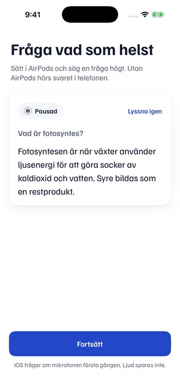
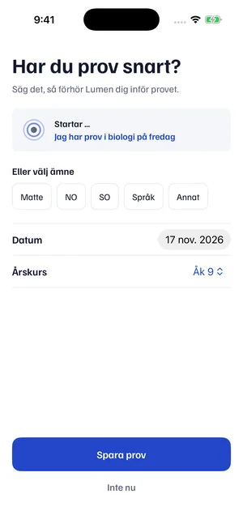
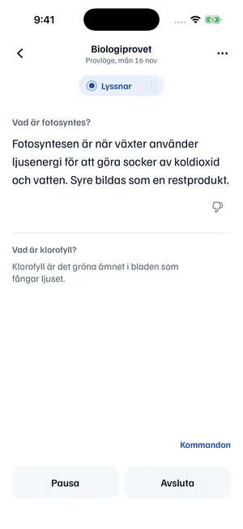

Fråga högt. Få svaret i örat.
Telefonen stannar i fickan.
Prova här. Svaret läses upp.
Lumen svarar bara när du frågar.
Svara högt för dig själv. Sedan hör du hur Lumen svarar.
I appen förhör Lumen dig på ditt eget prov. Mejla mig när appen finns
Svaren är ordagranna från vårt test av Provläget den 8 november, med samma röst som i appen.
Bäst med hörlurarna i.
Så kommer du igång
Tre steg. Sedan ligger telefonen i fickan och du pluggar med rösten.
Tryck Testa nu och fråga högt
Inget konto. Sätt i AirPods och fråga vad som helst. Svaret hörs i örat.

Säg vilket prov du har
Till exempel ”Jag har prov i biologi på fredag”. Du kan också välja ämne och datum.

Säg ”Lumen, förhör mig”
Lumen ställer frågor om det du pluggar och svarar på dina. Vill du bara ha svar trycker du Få A-svar till provet.

Skärmbilder från en testversion av appen.
Vill du ha appen?
Den är inte ute än. Skriv din e-post, så mejlar vi när den finns.
Väntelistan: vi använder din e-post bara för att berätta när appen finns. Vi sparar adressen, när du gav ditt samtycke och vilken länk du kom från (till exempel en kanal som tiktok). Vill du bli borttagen, eller har du frågor om dina uppgifter, mejla stenlundaron@gmail.com.
Demon: din fråga och din röst skickas till våra AI-leverantörer Anthropic och ElevenLabs för att skapa svaret, och de kan behålla data enligt sina villkor. Själva sparar vi inte dina frågor, svar eller ditt ljud, bara anonym statistik som ämneskategori och svarstid. För att begränsa demon räknar vi frågor per anonym inloggning och per nätverk, med en hashad version av din IP-adress. Din webbläsare minns den anonyma inloggningen och hur många frågor du ställt. Svar från AI kan vara fel.
Mer när du vill
Egna röstkommandon
Säg det du vill. Under Inställningar › Röstkommandon väljer du själv fraserna för att byta läge och pausa. Under Egna kommandon sparar du egna nyckelord med en instruktion till .
Lägg in ditt material i förväg
Importera instuderingsmaterial som PDF eller textfil, och kursmål, under Förberedelser. känner igen dina ämnesord och svarar på kursens nivå.
Fler lägen
- Intervju. Träna inför intervjun med frågor till jobbet du söker, och få kort återkoppling på dina svar.
- Socialt. Förslag på skämt, svar och följdfrågor när samtalet går trögt.
- Rizz. Charmiga förslag när du flirtar.
Vanliga frågor
- Hur kan jag plugga inför prov utan att titta på telefonen?
- Säg vilket prov du har och sedan ”Lumen, förhör mig”. Lumen ställer frågor om det du pluggar, och svaren läses upp i hörlurarna medan telefonen ligger i fickan.
- Kan jag bli förhörd inför ett prov?
- Ja. Tryck Förhör mig eller säg ”Lumen, förhör mig”, så ställer Lumen frågor om det du pluggar och svarar på dina. Prova med tre frågor i demon.
- Funkar det för nationella provet och A-nivå?
- Du kan fråga om det du pluggar. Svar från AI kan vara fel, så kontrollera alltid mot din kursbok.
- Kan jag prova utan att ladda ner något?
- Ja, du kan prova demon direkt på sidan. Appen är inte ute än. Skriv upp dig, så mejlar vi när den finns.